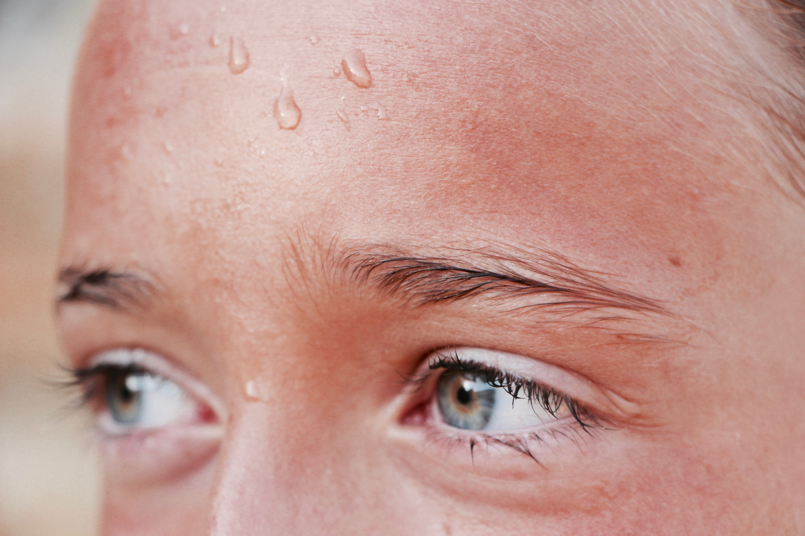

과도한 고온 환경에 노출되거나, 더운 환경에서 작업, 운동 등을 시행하면서 신체의 열 발산이 원활히 이루어지지 않아 고체온 상태가 되면서 발생하는 신체 이상을 말한다. 고전적인 열사병의 정의는 40℃ 이상의 심부체온, 중추신경계 기능 이상, 무한증(땀이 나지 않는 것)의 세 가지를 모두 가지고 있어야 하지만, 무한증은 나타나지 않을 수도 있다. 고체온증과 중추신경계 기능 이상을 보이는 환자는 열사병을 반드시 의심해야 하는데, 여러 장기를 손상시키는 응급 상황이므로 즉각적으로 처치하지 못하면 매우 높은 사망률을 보인다.
과도한 고온의 환경에 오랜 시간 노출되거나, 더운 상태에서 육체노동이나 운동을 지속할 때 시상 하부에 위치한 인체의 체온 유지 중추가 그 기능을 잃게 되면 열사병으로 진행한다. 정상적인 상태에서 인체가 고온 환경에 노출되면 시상하부 온도 조절장치와 관련된 온도 수용체에서 땀을 내고(발한), 피부의 모세혈관을 확장하며, 열 생산을 감소시키고, 심박출량을 증가시키며, 호흡을 증가시키는 것과 같은 기전으로 열을 몸 밖으로 발산하여 체온을 정상적인 범위 내에서 유지하게 된다... 더 알아보기